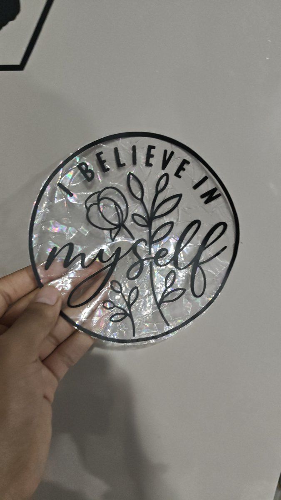
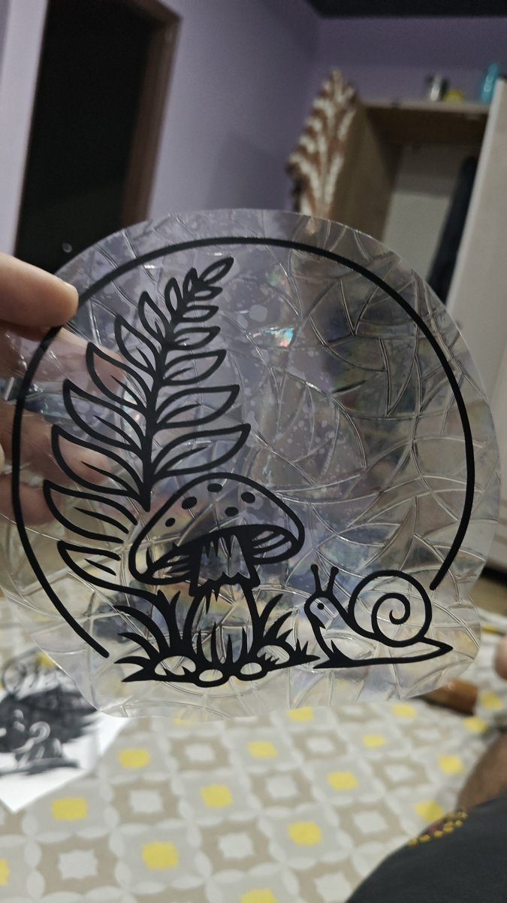
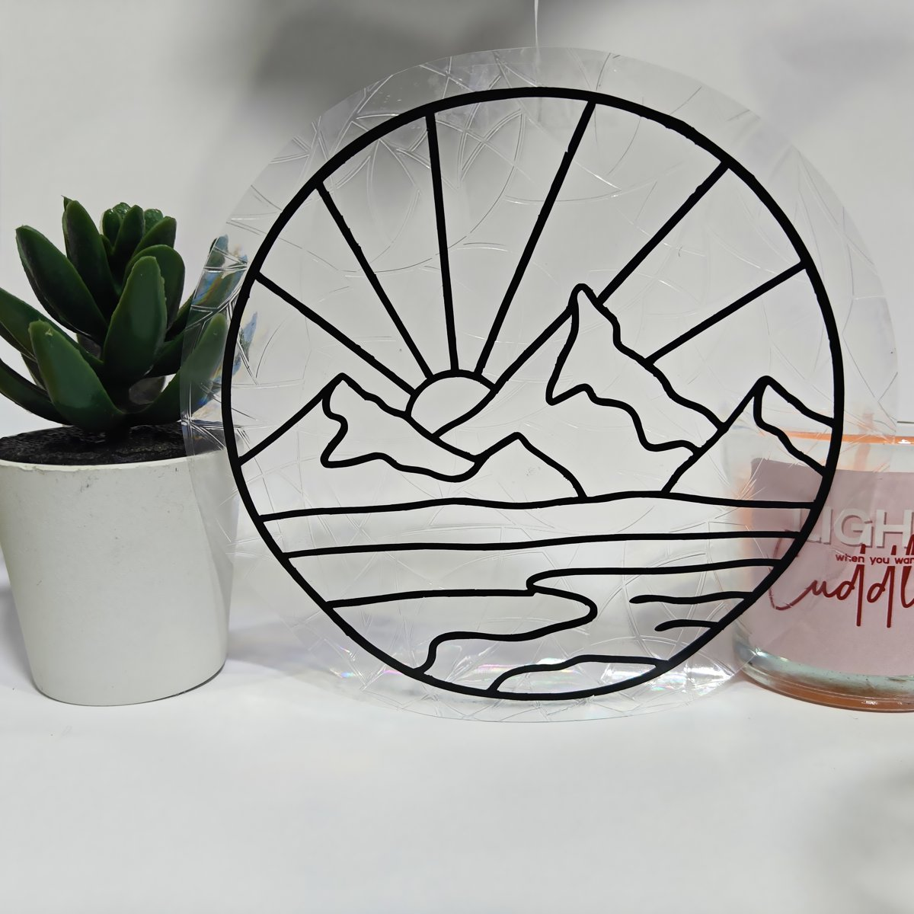

WINDOWS / RAINBOWS / LITTLE JOY
Catch a little sunshine.
Prismatic window accents for clean glass reached by direct sunlight. Four-piece shape packs start at ₹99; circular designs start at ₹299. Rainbow effects depend on sunlight and placement.

Believe in Myself · Suncatcher
A circular botanical affirmation design with delicate lettering. A window accent for direct sunlight. Confirm the final size before production.
From ₹299 · Choose options ↗
Woodland Mushroom · Suncatcher
A circular woodland scene with a mushroom and leafy fronds. A window accent for direct sunlight. Confirm the final size before production.
From ₹299 · Choose options ↗
Mountain Sunrise · Suncatcher
A rising sun, mountains and flowing water drawn in a clean circular composition. A window accent for direct sunlight. Confirm the final size before production.
From ₹299 · Choose options ↗
Celestial Window · Design Collection
A preview of celestial, floral and koi-inspired circular suncatchers. Final available designs are shared before your order.
From ₹299 · Choose options ↗Prism Shapes · Pick Four or Mix
Choose four of one shape, or the mixed combo with one Heart, one Cloud, one Diamond and one Star.
From ₹99 · Choose options ↗Where should I put a suncatcher?
Choose clean, smooth window glass that receives direct sunlight. Check the final size and available artwork before ordering. The pattern moves as the light changes.
How do I order?
Open a design, choose its size and finish, then use the bag, delivery and order-confirmation steps. Shipping and payment are confirmed on WhatsApp.